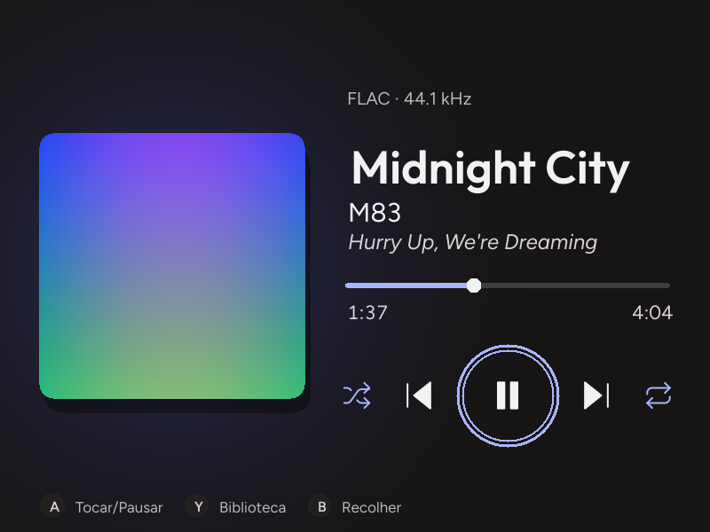
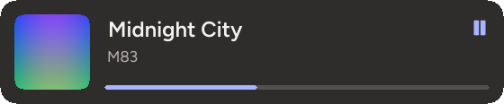

Player do AnberTunes dentro do jogo
Prévia renderizada no PC (sem o console). A cor de destaque sai da capa, como no app.
Expandido — a tela do player
Igual ao Now Playing do app: capa grande, título/artista/álbum, barra com a bolinha e os tempos, e os cinco controles (aleatório, anterior, tocar/pausar, próxima, repetir).

Biblioteca — navegar e escolher o que ouvir
Abas (Álbuns, Artistas, Músicas, Gêneros), lista com capas, e a seleção em destaque âmbar. Direcional pra mover, A pra tocar/entrar, B pra voltar, L2/R2 troca aba.

Reduzido — a barra embaixo
Compacto, pra deixar no cantinho enquanto joga. O ciclo do atalho L1+R1+X: reduzido → expandido → fecha.
